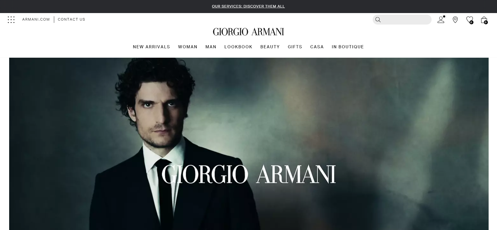
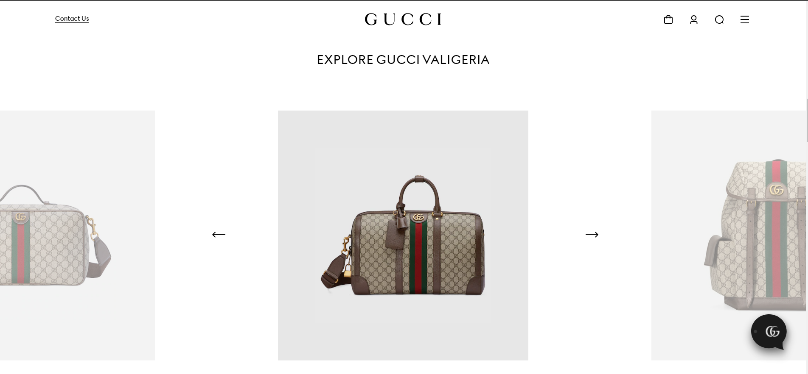
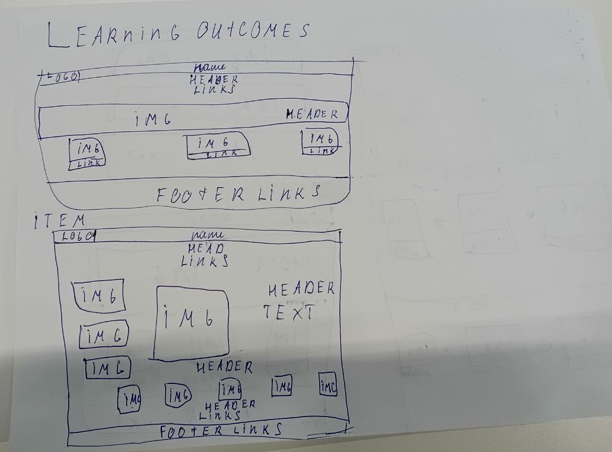
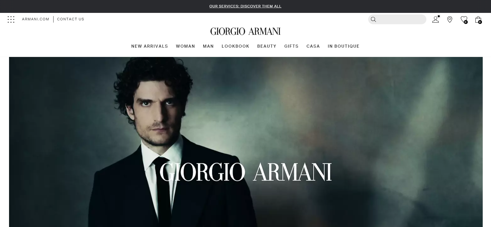
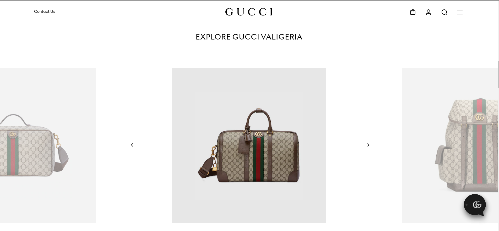
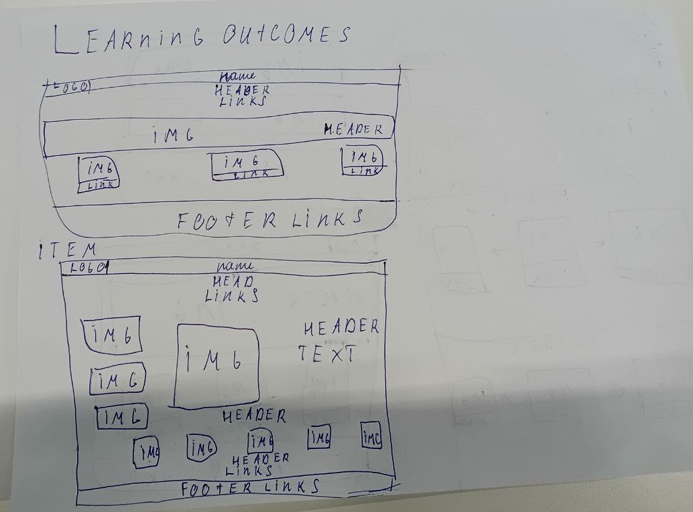

Professional Skills
 





Paper Prototype
On this page you can see the Paper Prototype I made for my Portfolio Website. The idea for that kind of placement of the items was taken from different online brand stores like Armani, Gucci, Hugo Boss, Rolex, Valentino, Zara and so on. To create the placement and functions of the website I used that websites. I did not received any feedback for that since I wanted to start working on the digitl version of my Prototype as soon as possible so all of the feedback for the prototype is on the digital version of it. Also, for the design choice and the idea of that look of the Portfolio is described in the page about my Portfolio. This task relates to Interactive Media becasue I am creating a Prototype using examples from professional field.